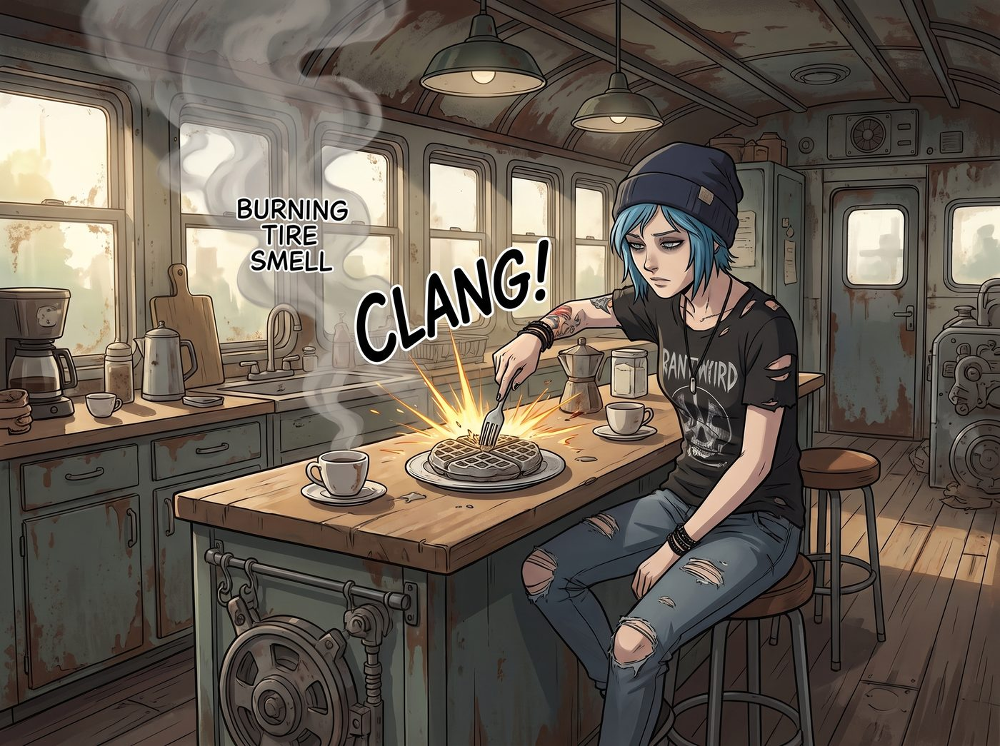
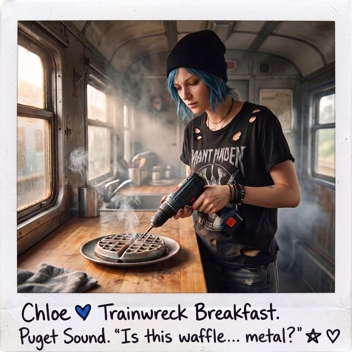
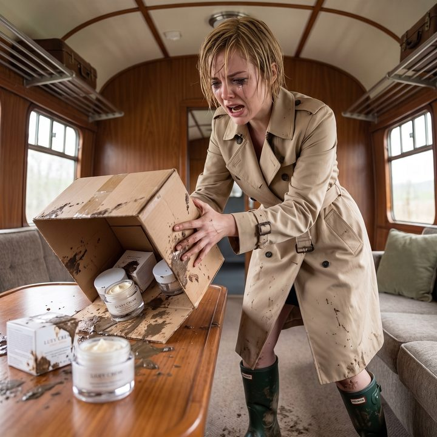
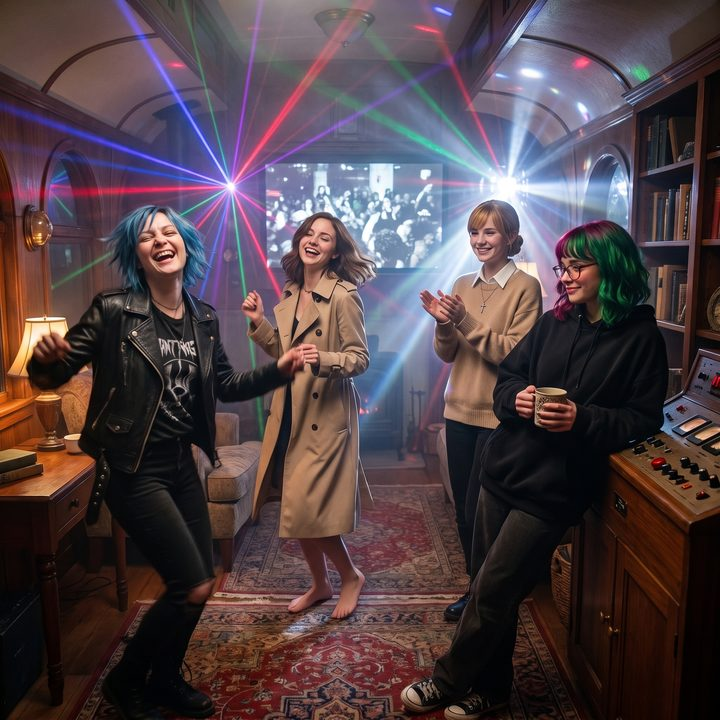

倒金字塔




馬斯洛需求層次理論，在二號車廂裡形成了一個極度畸形的倒金字塔。
在最底層的生理與安全需求上，Lily 的行政黑魔法讓她們過著堪比末日地堡VIP的生活：獨立電網永不斷電，高階淨水系統源源不絕，連帳戶裡的資金都披著各種合作專案的無敵裝甲。
但在這兩層堅不可摧的鋼板之上，屬於社交、尊重與自我實現的上層建築，卻在全面解封前的漫長等待中，不可避免地迎來了崩塌。黎明前的黑暗，往往不是因為外面有怪獸，而是因為無聊、封閉以及雞毛蒜皮的吃癟日常，正在把這五個女孩逼向崩潰的邊緣。
一、戰術級烘焙災難
星期二早上，車廂裡瀰漫著一股類似燃燒輪胎的詭異味道。
Chloe 穿著破洞T恤，生無可戀地用手裡的叉子，用力戳著盤子裡那一塊灰褐色的、散發著金屬光澤的鬆餅。噹的一聲，叉子竟然被彈開了。
「Kate，」Chloe 揉著太陽穴，「我發誓我願意為妳去死。但如果妳再讓我吃這個，我可能會選擇先殺了我自己。這玩意兒的密度比我皮卡車的剎車片還要高。」
站在開放式廚房裡的 Kate 帶著哭腔，絕望地看著烤箱裡另外幾塊已經碳化的不明物體：「對不起，Chloe……可是我們的麵粉和奶油上週就用光了。鎮上的超市因為供應鏈斷裂，貨架上連一根草都沒剩下……」
「所以您就使用了我申請來的極地作戰高熱量營養粉嗎，Kate 學姐？」Lily 坐在多螢幕工作站後，頭也沒抬，雙手依然在鍵盤上飛舞。
「上面寫著香草口味呀！」Kate 委屈地舉起一個印著骷髏頭和警告標語的軍綠色鋁箔袋。
「那是為了掩蓋化學防腐劑的氣味。」Lily 平靜地推了推圓框眼鏡，「那種營養粉的設計初衷，是為了讓特種部隊在極端低溫環境裡，用水壺裡的冰水攪拌後直接吞服。您把它放進攝氏兩百度的民用烤箱裡進行梅納反應，它內含的聚合穩定劑就會發生晶格硬化。也就是說，您剛才烤出了一塊防彈裝甲板。」
Max 默默地舉起寶麗來相機，喀嚓一聲，拍下了 Chloe 拿著電鑽試圖在鬆餅上打孔的絕望畫面。
二、名媛的物理降維
下午三點，一聲刺耳的尖叫聲穿透了奧林匹亞半島的雨幕。
Victoria 穿著一雙沾滿爛泥的雨靴，手裡舉著一個破破爛爛的快遞紙箱，氣急敗壞地衝進車廂。她原本精緻的頭髮被雨水打濕，像一隻憤怒的落湯雞。
「我要殺了那個快遞員！」Victoria 把紙箱狠狠摔在桌上，裡面的幾罐頂級面霜滾了出來，外包裝上全是泥巴。
「怎麼了，大小姐？妳的護膚品過期了嗎？」Chloe 幸災樂禍地吹了個口哨。
「那個白癡快遞員！」Victoria 氣得渾身發抖，「我花了一千五百美金買的護膚品，他居然不敢送進來！他給我發簡訊說，因為路口掛著那塊警示牌，他以為裡面有危險物質，所以把我的包裹扔在了三英里外的公路排水溝裡！我是一路踩著爛泥走過去撿回來的！」
Victoria 崩潰地捂住臉：「我可是 Victoria Chase！我以前的快遞都是由戴著白手套的管家送到我房間的！現在我居然要在泥水裡刨我的護膚品！」
「這證明了我的合規性威懾防禦系統運作非常完美。」Lily 端著熱牛奶走了過來，眼神純潔，「它不僅攔住了煩人的鄰居和警察，甚至連物流系統都無法突破它的防線。我們非常安全。」
「我寧願被病毒感染，也不想再用肥皂洗臉了！」Victoria 怒吼道。
Max 再次舉起相機，喀嚓，定格了昔日校園女王對著一堆沾著泥巴的頂級面霜崩潰痛哭的歷史瞬間。
三、被封印的叛逆
到了晚上，車廂裡的低氣壓達到了頂點。
每個人都處於一種焦躁的幽閉恐懼症邊緣。Chloe 已經在車廂裡來回踱步了兩個小時，像一頭被關在籠子裡太久的野獸。她不能去酒吧，不能去Livehouse，甚至不能開著車去公路上狂飆——因為鎮上的警察現在以違反宵禁為由，看到車就攔。
「不行了，我要瘋了。」Chloe 抓起一件皮夾克，「我要出去。就算在雨裡淋三個小時，或者跟警察打一架，我也要離開這個見鬼的鐵罐頭！」
「Chloe，外面在下冰雹……」Kate 擔憂地說。
「我不在乎！」Chloe 走向大門。
「學姐。」Lily 的聲音從背後傳來，這一次，沒有了平時的軟糯，而是帶著一種罕見的、甚至有些生硬的嘆息。
Chloe 停下腳步，轉過頭：「怎麼？妳又要拿哪條法規來壓我？」
「不。」Lily 站起身，關掉了她的筆記本電腦。
她看著眼前這群被安全折磨得痛不欲生的同伴：餓肚子但不敢吃軍糧的 Kate，為了護膚品滿身泥濘的 Victoria，抓狂的 Chloe，以及躲在相機後面眼神黯淡的 Max。
「行政工程和合規邏輯，確實無法解決人類大腦皮層對多巴胺和血清素的生理需求。」Lily 推了推眼鏡，「當小隊成員出現嚴重的幽閉焦躁症狀時，需要動用一切可用資源，進行感官欺騙與壓力釋放。」
Chloe 皺起眉頭：「妳在說什麼鳥語？」
Lily 沒有回答，只是在控制台上輸入了一串長長的密碼。
咔噠。車廂裡的照明燈瞬間全部熄滅。陷入了伸手不見五指的黑暗。
緊接著，一陣低沉的、彷彿能讓心臟跟著共振的低音頻率，從車廂四角的隱藏揚聲器中爆發出來。那是原本用來進行聲學驅散的陣列，此刻卻被 Lily 載入了一首節奏爆裂的地下龐克搖滾。
隨後，刺眼的、帶著迷幻色彩的雷射光束穿透了黑暗。那是原本用來在夜間指示座標的高流明戰術儀器，現在被 Lily 的程式改寫成了隨機閃爍的頻閃燈。
車廂中央的大螢幕亮起，播放著高畫質的、擁擠的、汗水交織的西雅圖地下Livehouse現場影像。
「這……這是什麼？」Max 震驚地在震耳欲聾的音樂聲中大喊。
「高擬真城市亞文化聲光模擬系統。」Lily 不知什麼時候換上了一件稍顯寬鬆的黑色連帽衫，手裡拿著兩個水壺，走到發呆的 Chloe 面前。
「這不是普通的自來水。」Lily 將其中一個水壺塞進 Chloe 懷裡，在閃爍的雷射光下，她的眼神依然冷靜，但嘴角卻罕見地帶著一絲屬於行政少女的狡黠。「這是我用設備冷卻液防凍劑的名義，申請來的高純度醫用酒精，混合了 Kate 學姐失敗的蔓越莓果醬。在報表上，它叫戰術防凍合劑；在現實中，它叫伏特加調酒。」
Chloe 呆呆地看著手裡的水壺，又看了看車廂裡那簡直比真正的夜店還要硬核的聲光效果，大腦當機了足足五秒鐘。
然後，她猛地擰開水壺，仰頭灌了一大口。酒精的辛辣和果醬的甜味在喉嚨裡炸開。
「靠！」Chloe 爆發出一聲狂野的歡呼，一把將皮夾克甩到沙發上，衝進了雷射光交織的舞池中心，隨著震耳欲聾的龐克音樂瘋狂地甩動著藍色的短髮。
Victoria 愣了一會兒，然後冷哼了一聲：「這燈光品味真像貧民窟的夜店。」但她還是脫下了那雙沾滿泥巴的雨靴，赤著腳，端起另一個水壺，優雅卻又帶著一絲發洩意味地走進了燈光裡。
Kate 雖然被音量震得有些害怕，但看到大家都笑了起來，也開心地跟著節奏拍起了手。
Max 舉起寶麗來相機。在雷射儀的頻閃下，Chloe 狂野的笑容、Victoria 甩動的金髮、Kate 溫柔的眼神，以及站在控制台旁邊，依然一臉平靜地喝著熱牛奶，彷彿在觀察某種社會學實驗，但眼神卻無比柔和的 Lily。
「喀嚓。」閃光燈亮起。
黎明前的黑暗確實很難熬。但只要行政黑魔法師願意稍微動用一點預算，這個只有五個人的鐵罐頭，就能變成全世界最堅不可摧、也最瘋狂的避難所。